DataLinq Version Control¶
Mit DataLinq Version Control koennen der Code von Views und Queries in ein externes Versionsverwaltungssystem (Git) gesichert werden, zum Beispiel in Gitea, GitHub oder vergleichbare Plattformen.
Ziele und Vorteile¶
Durch die Anbindung an Git ergeben sich mehrere wichtige Vorteile:
Ausfallssicherheit: Relevante Aenderungen liegen zusaetzlich ausserhalb der laufenden DataLinq-Instanz vor.
Nachvollziehbarkeit: Aenderungen lassen sich strukturiert verfolgen.
Transparenz im Team: Jede Aenderung kann mit Autor und Aenderungsgrund dokumentiert werden.
Bei Aenderungen koennen in DataLinq Commits mit Namen und Aenderungsmeldung erstellt werden. Dadurch ist spaeter klar erkennbar, wer etwas geaendert hat, wann die Aenderung erfolgte und welcher Zweck mit der Aenderung verbunden war.
Empfehlung fuer den Betrieb¶
Fuer produktive Umgebungen wird empfohlen, ein internes Git-Repository zu verwenden und keine oeffentlich zugaengliche Repository-Instanz.
Auf diese Weise bleiben Inhalte und Aenderungshistorie in einer kontrollierten Infrastruktur.
Beispiel in dieser Dokumentation¶
In dieser Dokumentation wird die Einrichtung exemplarisch mit einer lokalen Gitea-Instanz gezeigt.
Die Konfiguration erfolgt in der API-Anwendung unter dem Bereich Configuration. Dort muessen die Zugangsdaten fuer das Ziel-Repository hinterlegt werden, zum Beispiel Benutzername und Passwort oder alternativ ein Access-Token.
Erstellung eines Repositories¶
Fuer die Nutzung mit DataLinq wird zunaechst ein Repository im gewuenschten Git-System erstellt.
Im eigenen Git-System anmelden.
Ein neues Repository erstellen.
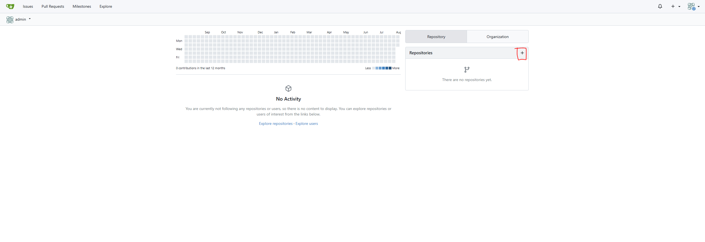
Repository-Details eintragen.
Dabei ist wichtig, dass Branch-Name und Repository-Name mit den Angaben in der DataLinq API Configuration uebereinstimmen.

Nach der Erstellung die Repository-URL kopieren und in den DataLinq-Einstellungen hinterlegen.
- Anschliessend kann entschieden werden, ob das Repository lokal selbst initialisiert wird
oder ob DataLinq die Initialisierung uebernehmen soll.
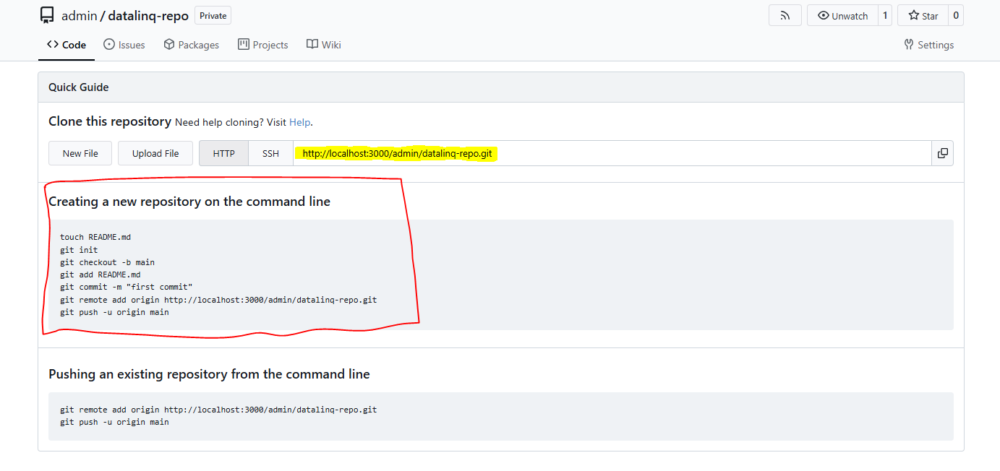
Initialisierung in DataLinq (Snapshot)¶
Nach der Repository-Konfiguration werden in DataLinq auf der Startseite zusaetzliche Buttons angezeigt:
Init Snapshot
Snapshot Status
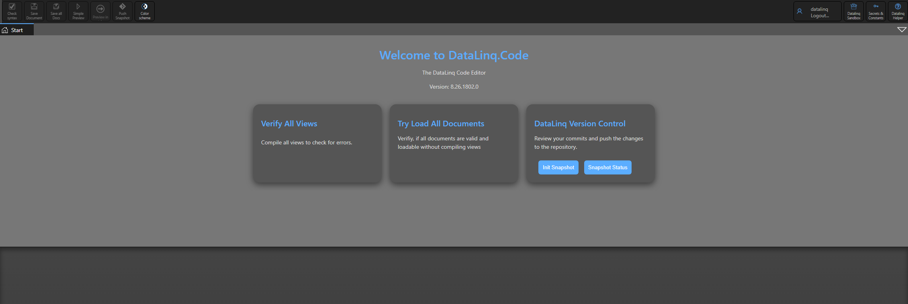
Snapshot Status¶
Direkt nach der Einrichtung zeigt Snapshot Status in der Regel an, dass noch nichts aktuell ist, da noch keine Inhalte in die Versionskontrolle uebergeben wurden.

Init Snapshot¶
Mit Init Snapshot wird der Initialisierungsprozess gestartet. DataLinq fragt davor zur Bestaetigung nach.
Warnung
Der Init-Prozess sollte nur einmal ganz zu Beginn durchgefuehrt werden, da dabei alle bestehenden Inhalte in einem gemeinsamen Initial-Commit zusammengefuehrt werden.
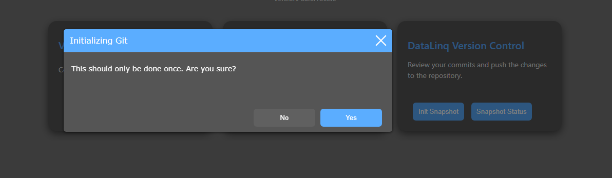
Nach erfolgreicher Initialisierung wird eine Erfolgsmeldung angezeigt.

Status nach der Initialisierung¶
Anschliessend zeigt Snapshot Status, dass alle Dateien mit der Versionskontrolle synchron sind.

Kontrolle im Git-Repository¶
Auch im Git-Repository ist danach die automatische Initialisierung sichtbar, inklusive des ersten Initial-Commits sowie der uebernommenen Query- und Endpoint-Dateien.
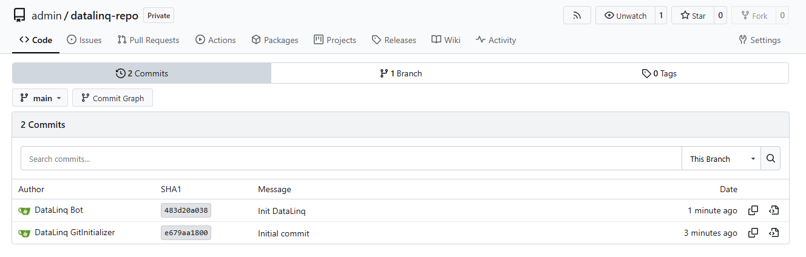
Files:

Commit-Workflow im DataLinq Code Editor¶
Wenn im DataLinq Code Editor eine neue Query oder View erstellt wird, oder eine bestehende Query/View geaendert wird, signalisiert das Git-Symbol in der Toolbar den Status.
Ist das Symbol rot, sind lokale Aenderungen vorhanden und der Stand ist noch nicht synchronisiert.
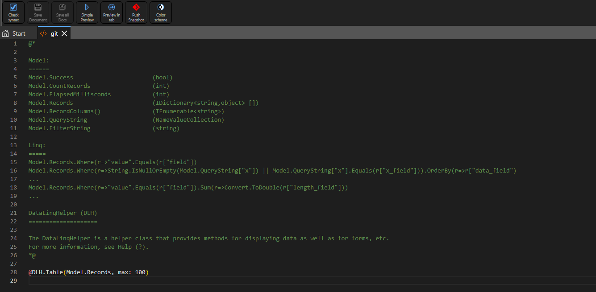
Nach Klick auf das Git-Symbol kann ein Commit erstellt werden. Dabei werden Name und Message erfasst.
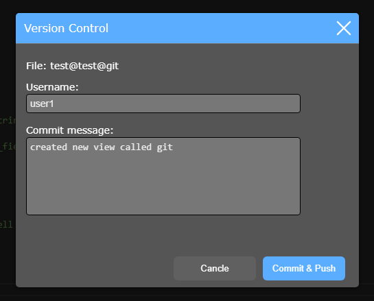
Nach erfolgreichem Commit wird eine Erfolgsmeldung angezeigt.

Anschliessend wird das Git-Symbol gruen und zeigt den synchronen Status an.
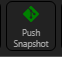
Werden danach weitere Aenderungen vorgenommen (zum Beispiel durch einen anderen Benutzer), wechselt das Symbol erneut auf rot.
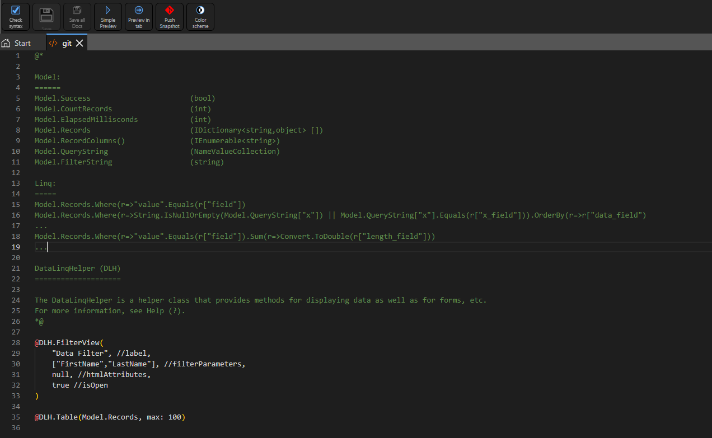
Nach erneutem Commit wird der aktuelle Stand wieder synchronisiert.

Im Git-Repository sind anschliessend die neuen Commits inklusive Commit-Messages sichtbar.
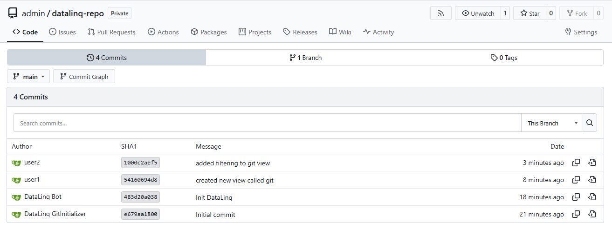
Die genauen Änderungen nachvollziehbar.
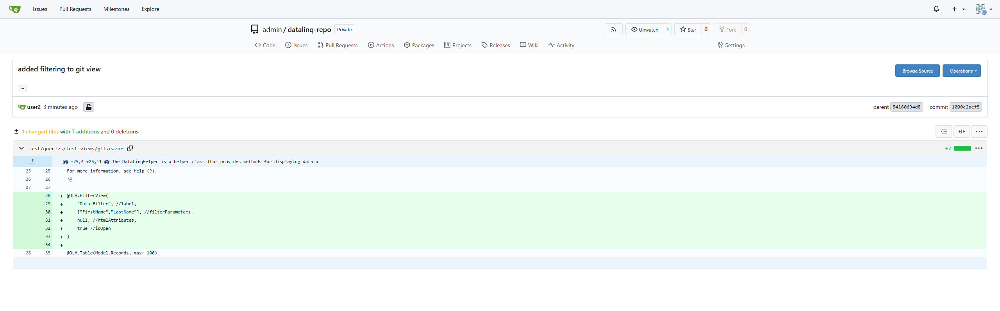